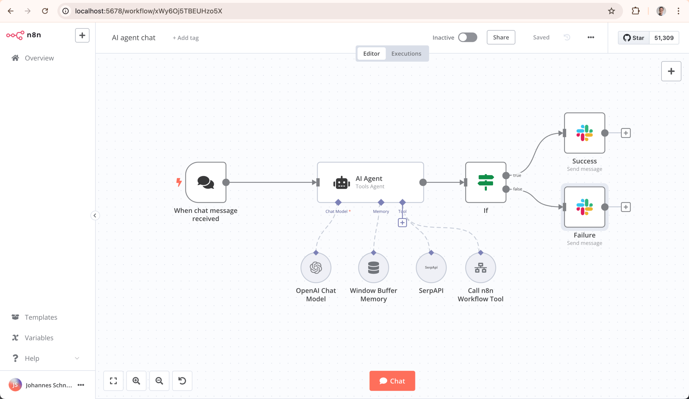

AI 工作流自动化
大家应该都碰到过这样的经历：
-
每天早上到公司，先花半小时看邮件，筛选出重要的，然后一一回复。
-
收到客户反馈后，要手动整理、分类，再发给相应的负责人。
-
社交媒体要定期更新，每次都要写文案、配图、定时发布。
这些重复性工作消耗了你大量的时间，但它们其实不需要太多思考。
AI 工作流自动化就是解决这类问题的：把重复的、规则明确的任务，交给 AI 自动完成。
工作流自动化的核心目标是：把你的时间从执行解放出来，用在决策上。
什么是 AI 工作流
AI 工作流是把多个 AI 能力和工具串联起来，形成一个自动化流程。
简单说就是：当某个事件发生时，触发一系列操作，AI 在中间做理解、判断和生成。
工作流自动化的概念
一个典型的工作流由三部分组成：
| 组成部分 | 作用 | 常见例子 |
|---|---|---|
| 触发器（Trigger） | 什么情况下开始执行 | 收到新邮件、定时到点、有人提交表单 |
| 动作（Action） | 执行什么操作 | 发送消息、保存数据、生成内容 |
| 条件（Condition） | 不同情况做不同处理 | 如果是紧急邮件就通知，否则整理摘要 |
举个具体例子：
-
触发器：每 6 小时检查一次指定的新闻网站。
-
动作一：AI 抓取新闻内容，筛选出与你行业相关的。
-
动作二：AI 把相关新闻总结成 100 字以内的摘要。
-
动作三：把摘要发送到你的 Slack 频道。
这就是一个完整的 AI 工作流。设置好之后，它会自动运行，不需要你任何操作。
AI 工作流 vs 传统自动化
AI 工作流和传统自动化最大的区别在于：AI 能处理非结构化内容，能做判断。
| 对比项 | 传统自动化 | AI 工作流 |
|---|---|---|
| 处理内容 | 只能处理结构化数据 | 能理解文本、图片、语音 |
| 规则来源 | 需要人写死规则 | AI 能根据内容做判断 |
| 灵活性 | 规则一变就要重写 | 调整提示词就能改变行为 |
| 适用场景 | 简单、重复、确定性任务 | 需要理解、判断的复杂任务 |
比如收到邮件后转发给张三——这是传统自动化，规则明确。
收到邮件后，AI 判断重要程度，重要的立刻通知，不重要的整理摘要每周发一次——这是 AI 工作流，需要理解和判断。
n8n 工作流平台
n8n 是一个开源的工作流自动化工具，可以自托管，也可以使用云端版本。
n8n 的特点是完全可视化操作，用拖拽的方式就能搭建复杂的工作流。
开源地址：https://github.com/n8n-io/n8n
n8n 安装
通过 npx 一键体验 n8n（需预先安装 Node.js 环境）：
npx n8n
也可使用 Docker 部署运行：
# 创建数据持久化卷 docker volume create n8n_data # 启动 n8n 容器 docker run -it --rm --name n8n -p 5678:5678 -v n8n_data:/home/node/.n8n docker.n8n.io/n8nio/n8n
部署完成后，在浏览器打开 http://localhost:5678 就能看到 n8n 的界面。

如果你不想自己搭建，也可以使用 n8n Cloud 云端版本 https://n8n.io/，直接注册就能用。
核心概念：节点、连接、触发器
n8n 的界面由画布和节点组成，理解三个核心概念就能开始使用：
| 概念 | 作用 | 说明 |
|---|---|---|
| 节点（Node） | 执行具体操作 | 比如"发送邮件"、"调用 OpenAI"、"保存数据" |
| 连接（Connection） | 串联节点 | 从一个节点拖到另一个节点，定义执行顺序 |
| 触发器（Trigger） | 启动工作流 | 每个工作流的第一个节点，定义"什么时候开始" |
创建工作流的基本步骤：
-
1. 在画布上添加一个触发器节点（比如"定时触发"或"Webhook"）。
-
2. 添加第一个动作节点，配置它的参数。
-
3. 从触发器拖一条线连到动作节点。
-
4. 继续添加更多节点，依次连接。
-
5. 点击"测试"，看流程是否正常运行。
-
6. 激活工作流，让它自动运行。
集成 OpenAI 节点
n8n 内置了 OpenAI 节点，可以直接调用 GPT 模型。
配置步骤：
-
1. 在节点列表中找到 OpenAI，拖到画布上。
-
2. 在节点设置中添加你的 OpenAI API Key。
-
3. 选择要使用的模型（比如 gpt-3.5-turbo 或 gpt-4）。
-
4. 编写提示词，可以引用前面节点的输出数据。
一个典型的提示词配置可能长这样：
请把下面的邮件内容总结成 3 句话摘要：
{{$json.body}}
摘要：
其中 {{$json.body}} 是引用前面邮件节点的正文内容。
实战：自动总结邮件并发送 Slack 通知
我们来搭建一个完整的工作流：收到邮件后，AI 总结内容，然后发送到 Slack。
这个工作流需要三个节点：
-
1. 邮件触发器：当收到新邮件时触发。
-
2. OpenAI 节点：把邮件内容总结成摘要。
-
3. Slack 节点：把摘要发送到指定频道。
配置要点：
-
邮件节点：配置 IMAP 或使用 n8n 的邮件触发器。
-
OpenAI 节点：提示词设为总结这封邮件，不超过 100 字，输入引用邮件的正文。
-
Slack 节点：配置 Slack Bot Token，选择频道，消息内容引用 OpenAI 的输出。
连接这三个节点，测试通过后激活，工作流就会自动运行了。
n8n 的节点库非常丰富，支持 Gmail、Notion、Airtable、Google Sheets 等数百种服务。花时间探索一下节点库，你会发现很多可以自动化的场景。
Make（原 Integromat）
Make 是另一个流行的工作流自动化平台，原名 Integromat，2021 年更名为 Make。
和 n8n 相比，Make 更偏向商业用户，界面更精致，付费版功能更强。
Make 与 n8n 的对比
| 对比项 | n8n | Make |
|---|---|---|
| 开源 | 是，可自托管 | 否，纯 SaaS |
| 免费版 | 自托管完全免费 | 有，功能受限 |
| 界面 | 偏技术向 | 更友好、精美 |
| 节点数量 | 数百个 | 数千个 |
| 企业功能 | 需付费版 | 完善 |
| 学习曲线 | 稍陡 | 较平缓 |
简单总结：如果你想自己掌控、有技术能力，选 n8n；如果你想要更简单易用、企业级支持，选 Make。
AI 模块使用
Make 内置了多个 AI 相关模块：
OpenAI 模块：调用 GPT、DALL-E、Whisper 等模型。
Make AI 模块：Make 自家的 AI 功能，可以智能处理数据。
其他 AI 工具：支持 Anthropic Claude、Google AI、Midjourney 等。
在 Make 中使用 AI 的流程：
-
1. 在模块库中搜索 OpenAI或你想用的 AI 工具。
-
2. 拖拽到场景画布上。
-
3. 配置 API 密钥和参数。
-
4. 把前面模块的数据传给 AI 模块。
-
5. 把 AI 的输出传给后面的模块。
Make 的一个特色是 AI 提示词助手——你可以用自然语言描述你想做什么，它会帮你生成提示词。
实战示例
我们用 Make 做一个"社交媒体内容自动生成"的工作流：
-
1. 触发器：每周一早上 9 点定时触发。
-
2. Google Sheets 模块：读取你预先准备的产品更新和活动信息。
-
3. OpenAI 模块：根据表格内容生成微博、LinkedIn、Twitter 三个平台的文案。
-
4. Airtable 模块：把生成的文案保存到审核表格。
-
5. Slack 模块：通知你"本周内容已生成，请到 Airtable 审核"。
整个流程设置好后，每周一都会自动运行。你只需要审核和微调内容，不用从零开始写文案。
Zapier AI 自动化
Zapier 是工作流自动化领域的鼻祖，成立于 2011 年。
Zapier 的特点是连接的应用最多（超过 6000 个），使用最简单。
Zapier 基础使用
Zapier 把工作流叫做 Zap，创建一个 Zap 的步骤：
-
1. 选择触发应用和触发事件（比如"Gmail 收到新邮件"）。
-
2. 连接你的账户，配置触发条件。
-
3. 选择第一个动作应用和动作事件（比如"OpenAI 生成文本"）。
-
4. 配置动作参数，引用触发器的数据。
-
5. 可以继续添加更多动作。
-
6. 测试并启用 Zap。
Zapier 的界面比 n8n 和 Make 更简化，每个步骤都是表单式的，不用拖拽连线。
AI Actions 功能
Zapier 推出了专门的 AI Actions 功能，让你用自然语言描述想做什么，它自动配置整个 Zap。
比如你输入：
当我收到带有"发票"标签的邮件时，把附件保存到 Google Drive， 然后用 AI 提取金额和日期，记录到 Airtable， 最后给我发一条 Slack 通知。
Zapier AI 会自动识别出需要哪些步骤，帮你配置好各个节点。
你也可以用 AI 来帮你写提示词。比如在调用 GPT 时，你说"帮我写个提示词来总结这封邮件"，AI 会生成专业的提示词模板。
适合场景
Zapier 最适合这些场景：
| 场景 | 为什么选 Zapier |
|---|---|
| 连接小众应用 | Zapier 支持 6000+ 应用，很多别家没有 |
| 个人简单自动化 | 界面最简单，上手最快 |
| 非技术用户 | 不需要任何技术背景 |
| 快速原型验证 | 几分钟就能搭好一个工作流 |
工具选择建议：新手从 Zapier 开始，想深入掌控用 n8n，企业级需求选 Make。其实三个工具的核心思路是一样的，学会一个再换另一个很容易。
自定义 GPT 与 Claude Projects
除了用工作流工具串联多个服务，你也可以创建专门的 AI 助手来处理特定任务。
OpenAI 的 GPTs 和 Anthropic 的 Claude Projects 都是这类工具。
创建专属 AI 助手
以 OpenAI GPTs 为例，创建一个自定义助手的步骤：
-
1. 访问 ChatGPT 官网，点击"Explore" → "Create a GPT"。
-
2. 在"Create"标签页，用自然语言描述你想要的助手。
-
比如："你是一个 runoob 技术文档编辑，负责把复杂的技术概念解释得通俗易懂，适合初学者阅读。"
-
3. 在"Configure"标签页，配置更详细的设置。
-
4. 添加知识库文件（可选）。
-
5. 配置功能（比如联网搜索、代码解释器）。
-
6. 测试、调整，最后发布。
Claude Projects 的创建流程类似，在 Claude 官网的 Projects 功能中操作。
知识库上传
自定义 AI 助手的一大优势是可以上传你自己的知识库。
支持的文件格式通常包括：
| 格式 | 说明 |
|---|---|
| 最常用，适合文档、报告、书籍 | |
| TXT | 纯文本，简单通用 |
| DOCX | Word 文档 |
| CSV | 表格数据 |
| JSON | 结构化数据 |
上传后，AI 会根据这些知识来回答问题。
比如你可以把公司的产品文档、客服手册、历史案例都上传，创建一个"内部知识助手"，员工有问题直接问它。
或者把你写过的所有文章上传，创建一个"写作风格助手"，它会模仿你的风格来写新内容。
指令定制
指令（Instructions）是自定义助手的核心，它定义了 AI 的角色、行为方式和输出格式。
一个好的指令通常包括：
-
角色定义：你是谁，做什么的。
-
行为准则：你应该怎么做，不应该怎么做。
-
输出格式：回答的结构是什么样的。
-
约束条件：有什么禁忌和注意事项。
举个指令的例子：
你是 runoob 的技术文档助手。 你的任务是把复杂的技术概念解释得通俗易懂，适合初学者。 回答时请遵循这些规则： 1. 先用一句话简单解释是什么 2. 然后用生活中的例子类比 3. 最后给出一个最简单的代码示例 4. 如果有重要的注意事项，用加粗标出 不要使用太深的术语，必要术语要解释。 保持语气友好、鼓励，像老师在教学生。
指令写得越具体，AI 的表现就越稳定。
Webhook 与触发器
Webhook 是工作流自动化中非常重要的概念，它让外部系统能够实时触发你的工作流。
Webhook 的工作原理
简单说，Webhook 就是一个"URL 回调地址"。
传统的方式是"轮询"：你的系统每隔一段时间去问外部系统"有新数据吗？"——这很低效。
Webhook 是"推送"：外部系统有新数据时，主动给你发送 HTTP 请求，通知你。
Webhook 的工作流程：
-
1. 你在 n8n/Make/Zapier 中创建一个 Webhook 触发器，得到一个 URL。
-
2. 把这个 URL 配置到外部系统（比如 GitHub、Stripe、你的网站）。
-
3. 当外部系统发生事件时（比如有人提交代码、有人付款），它向这个 URL 发送数据。
-
4. 你的工作流接收到数据，开始执行。
Webhook 是实时的，事件发生后几毫秒内就能触发工作流。
事件驱动的自动化
Webhook 让事件驱动的自动化成为可能。
常见的 Webhook 事件源：
| 事件源 | 典型事件 | 用途示例 |
|---|---|---|
| GitHub | 有人提交代码、有人提 Issue | 收到 Issue 时自动用 AI 回复 |
| Stripe | 有人付款、订阅过期 | 收到付款时发送感谢邮件 |
| Typeform | 有人提交表单 | 表单提交后 AI 分析内容并分配 |
| Shopify | 新订单、库存预警 | 新订单时自动生成发货单 |
| 你的网站 | 用户注册、留言 | 新用户注册时欢迎邮件 |
我们用 Python 来实现一个简单的 Webhook 接收 + AI 处理流程：
实例
# 简单的 Webhook 服务器 + AI 处理流程
# 使用 Flask 接收 Webhook，调用 OpenAI 处理
# ============================================
from flask import Flask, request, jsonify
import openai
import json
# 初始化 Flask 应用
app = Flask(__name__)
# 配置 OpenAI（请替换为你的 API Key）
openai.api_key = "sk-your-api-key-here"
def process_with_ai(content: str) -> str:
"""
用 AI 处理接收到的内容
这里做一个简单的"内容分类+摘要"
"""
prompt = f"""
请分析下面的内容，做两件事：
1. 分类：判断是"问题"、"建议"还是"感谢"
2. 摘要：用一句话总结核心内容
内容：
{content}
请用 JSON 格式返回，格式如下：
{{
"category": "问题/建议/感谢",
"summary": "摘要内容"
}}
"""
response = openai.ChatCompletion.create(
model="gpt-3.5-turbo",
messages=[
{"role": "system", "content": "你是 runoob 的内容分析助手。"},
{"role": "user", "content": prompt}
],
temperature=0.7
)
return response.choices[0].message.content
@app.route("/webhook", methods=["POST"])
def webhook_handler():
"""
接收 Webhook 的端点
外部系统向这个 URL 发送 POST 请求
"""
# 获取请求数据
data = request.get_json()
print(f"收到 Webhook 数据：{data}")
# 提取我们需要的内容（根据实际情况调整字段名）
# 这里假设传来的数据有一个 "content" 字段
content = data.get("content", "")
if not content:
return jsonify({"status": "error", "message": "缺少 content 字段"}), 400
# 用 AI 处理内容
try:
ai_result = process_with_ai(content)
print(f"AI 处理结果：{ai_result}")
# 解析 AI 返回的 JSON
parsed_result = json.loads(ai_result)
# 这里可以把结果存到数据库、发送通知等
# 为了演示，我们只是打印出来
category = parsed_result.get("category", "未知")
summary = parsed_result.get("summary", "")
print(f"分类：{category}")
print(f"摘要：{summary}")
# 返回成功响应
return jsonify({
"status": "success",
"category": category,
"summary": summary
})
except Exception as e:
print(f"处理出错：{e}")
return jsonify({"status": "error", "message": str(e)}), 500
@app.route("/test", methods=["GET"])
def test_page():
"""
一个简单的测试页面，方便测试 Webhook
"""
return """
<html>
<body>
<h1>测试 Webhook</h1>
<form action="/webhook" method="post">
<textarea name="content" placeholder="输入测试内容"></textarea>
<br>
<button type="submit">发送</button>
</form>
</body>
</html>
"""
if __name__ == "__main__":
print("Webhook 服务器启动在 http://localhost:5000")
print("Webhook 地址：http://localhost:5000/webhook")
print("测试页面：http://localhost:5000/test")
app.run(port=5000, debug=True)
运行这个服务器后，你可以在浏览器打开 http://localhost:5000/test 来测试，或者用 curl 发送测试请求：
实例
curl -X POST http://localhost:5000/webhook \
-H "Content-Type: application/json" \
-d '{
"content": "runoob 的教程写得太好了！要是能多一些 AI 工作流的实战例子就更好了。"
}'
如果一切正常，你会看到 AI 返回的分类和摘要。
生产环境使用 Webhook 时，记得加上验证机制——比如验证签名、检查来源 IP、使用 API Key。否则任何人都能向你的 Webhook 发送请求，可能导致安全问题。
实战项目合集
这一节我们给出三个完整的实战项目思路，你可以直接套用这些模板。
自动生成每日新闻简报
目标：每天早上自动收集行业新闻，AI 筛选并总结，发送到你的邮箱或 Slack。
需要的工具：n8n/Make/Zapier、RSS 源、OpenAI、邮件/Slack。
工作流步骤：
-
1. 定时触发器：每天早上 8 点触发。
-
2. RSS 节点：读取你关注的几个行业媒体 RSS。
-
3. 去重节点：过滤掉重复的新闻。
-
4. OpenAI 节点：逐条阅读新闻，判断是否与你行业相关。
-
5. OpenAI 节点：把相关新闻总结成摘要。
-
6. OpenAI 节点：把所有摘要整理成一封邮件，加上标题和导语。
-
7. 邮件节点：发送到你的邮箱。
提示词示例：
请阅读下面这篇新闻的标题和摘要，判断它是否与"AI 技术应用"相关。
只需要回答"是"或"否"，不要解释。
新闻标题：{{$json.title}}
新闻摘要：{{$json.summary}}
社交媒体内容自动发布
目标：根据产品动态，自动生成多平台社交媒体文案，审核后定时发布。
需要的工具：Make/Zapier、Airtable、OpenAI、Buffer/Hootsuite。
工作流步骤：
-
1. Airtable 触发器：当你在 Airtable 中添加一条"产品动态"记录时触发。
-
2. OpenAI 节点：根据产品动态生成微博文案（活泼风格）。
-
3. OpenAI 节点：根据产品动态生成 LinkedIn 文案（专业风格）。
-
4. OpenAI 节点：根据产品动态生成 Twitter 文案（简洁风格）。
-
5. Airtable 节点：把三个平台的文案写入"待审核"表格。
-
6. Slack 节点：通知你有新内容待审核。
-
7. （人工审核后）Buffer 节点：定时发布到各平台。
这个流程既自动化，又保留了人工审核的控制权——毕竟社交媒体直接面向客户，还是要把把关。
客户反馈自动分类
目标：收到客户反馈后，AI 自动分类、分析情感、分配给相应负责人。
需要的工具：n8n、Typeform/表单工具、OpenAI、Airtable、Slack。
工作流步骤：
-
1. Webhook 触发器：客户在网站提交反馈时触发。
-
2. OpenAI 节点：分析反馈的情感（正面/中性/负面）。
-
3. OpenAI 节点：分类反馈类型（Bug/功能请求/使用问题/感谢）。
-
4. OpenAI 节点：提取关键词和优先级。
-
5. Airtable 节点：把所有信息保存到反馈数据库。
-
6. 条件分支：如果是负面反馈且高优先级，走紧急流程；否则走普通流程。
-
7. Slack 节点：紧急反馈通知技术负责人，普通反馈通知客服。
-
8. OpenAI 节点：生成一个礼貌的自动回复，感谢客户反馈。
9. 邮件节点：把自动回复发送给客户。
这个流程能让客户立刻收到回复，同时内部也能快速响应重要问题。
设计工作流的一个原则：先自动化"收集、整理、分发"这些机械性工作，把"判断、决策、创意"留给人。不要试图让 AI 做所有决定，人机协作效果最好。
三个工具对比总结
我们把 n8n、Make、Zapier 三个主流工具做一个全面对比，帮你选择：
| 对比项 | n8n | Make | Zapier |
|---|---|---|---|
| 开源 | 是 | 否 | 否 |
| 自托管 | 支持 | 不支持 | 不支持 |
| 免费方案 | 自托管完全免费 | 免费版限制操作数 | 免费版限制 Zaps 数 |
| 连接应用数 | 数百个 | 数千个 | 6000+ |
| 界面风格 | 可视化画布 | 精致画布 | 步骤表单 |
| 学习曲线 | 中等 | 较低 | 最低 |
| 企业功能 | 需付费版 | 完善 | 完善 |
| 技术门槛 | 稍高（自托管） | 低 | 最低 |
| 适合人群 | 开发者、技术团队 | 中小企业、团队 | 个人、新手 |

点我分享笔记